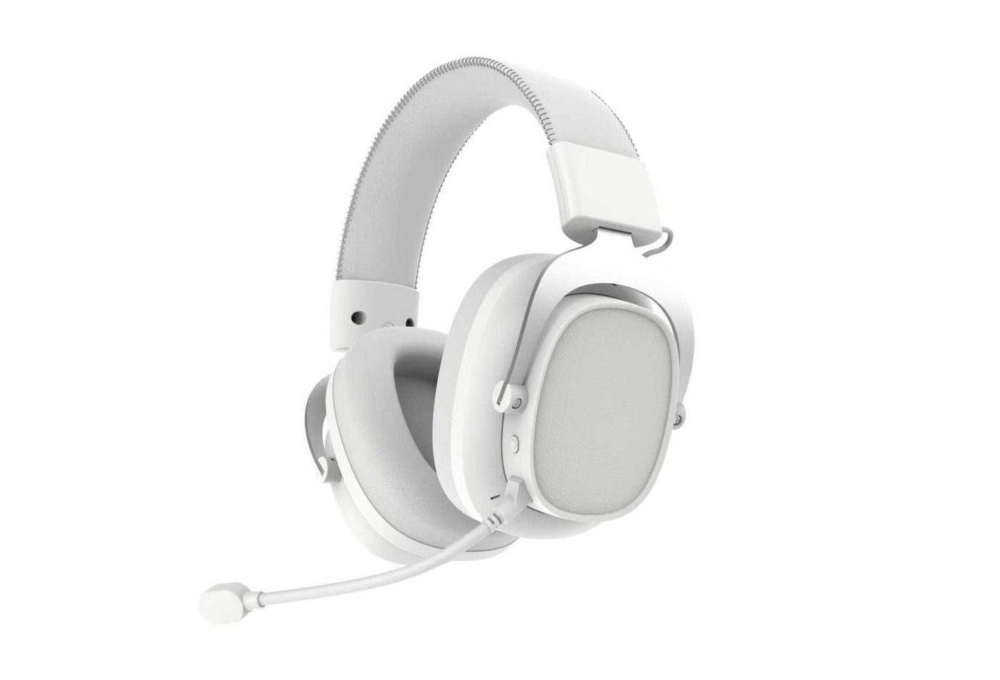

Read the published model list
The published RED and RoHS files name Nanrui and specific models. G936 is not listed in those two documents. Even a listed model needs a configuration and scope check; the files are not a complete shipment document set.

Europe sourcing
The sample looks right. Do its documents and retail box describe the same version? Compare TALRIVO gaming headsets from China with the destination country, receiver, manual language and document questions in one brief.

Before artwork approval
A familiar model number is a starting point, not the whole approval record. Resolve these four items before treating a sample as the order specification.
Reviewable references
The published RED and RoHS files name Nanrui and specific models. G936 is not listed in those two documents. Even a listed model needs a configuration and scope check; the files are not a complete shipment document set.
Use the blank worksheet for connection, microphone and accessory checks. Save actual observations against the version under discussion; the worksheet is not a completed test report.
Separate logo, box artwork, manual text and included accessories. Confirm what needs a new proof or sample instead of assuming that one approval covers every change.
Use the EU reference when discussing CE marking, declarations and supporting documentation with your importer. It is not evidence that a TALRIVO model is covered or a guide for every country in Europe.
Useful links
Product FAQ
No. Match the selected model and configuration to the relevant declaration and supporting documents. A mark or a document for another model does not establish coverage for the sample or destination you intend to order.
No. The published files name specific Nanrui models, not the entire catalogue. For example, G936 is not listed in the two published RED and RoHS files. Ask for the current document set and its relevance to the exact model before order confirmation.
State each destination country and the packaging and manual languages you need. Confirm the translation, artwork, company details and approval responsibilities after model selection. This page does not promise a finished translation or an approved label for every market.
Send the destination country, model or connection requirement, target devices, quantity per SKU and sample timing. Add the document questions, manual languages, branding and packing list you want checked so the product and document review refer to the same version.
Include the destination country, headset version or connection need, quantity per SKU, document questions and packaging languages. Add TWS, Bluetooth headphones or Type-C earphones if your shortlist covers more than gaming audio.